NEXORA Studio is an open-source desktop editor for video, colour, motion graphics, VFX and design. One project, one timeline, every tool. No subscription, no watermark.
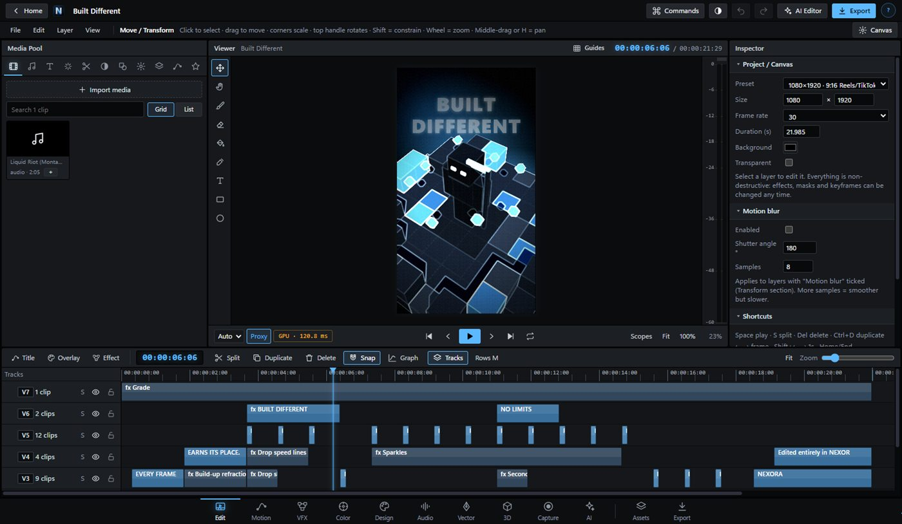
Edit, Color, Motion, VFX, Design, Audio, Vector, 3D, Blocks, Capture and AI all work on the same project and the same timeline.
Titled panels, timecode everywhere and the pages along the bottom, laid out like a finishing suite.
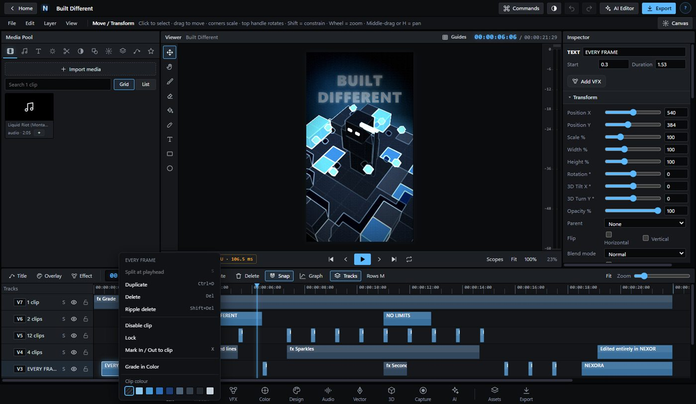
Every clip has the commands you reach for most, plus speed and colour labels.
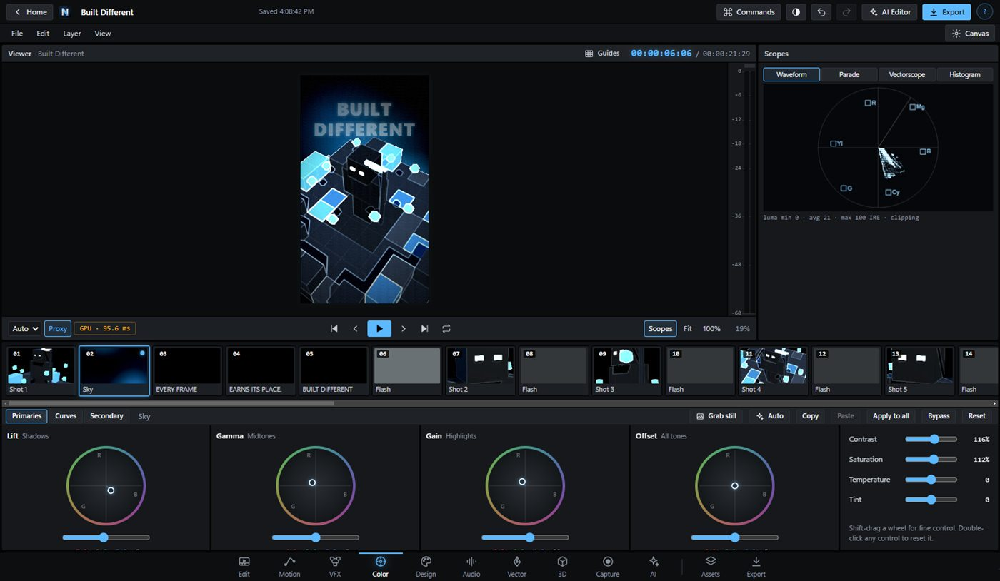
A dedicated Color page on the same timeline: the viewer, a clip strip with graded thumbnails, scopes on the right.
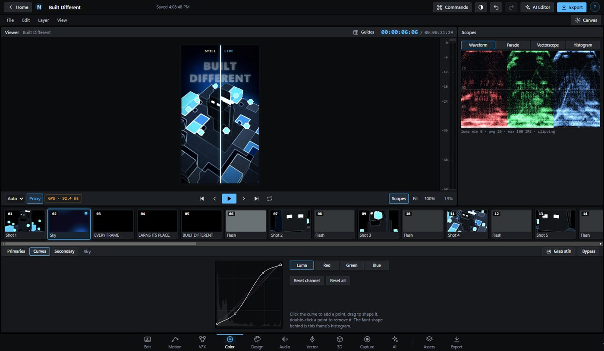
Shape luma and each channel with smooth curves, then compare against a still with a split-screen wipe.
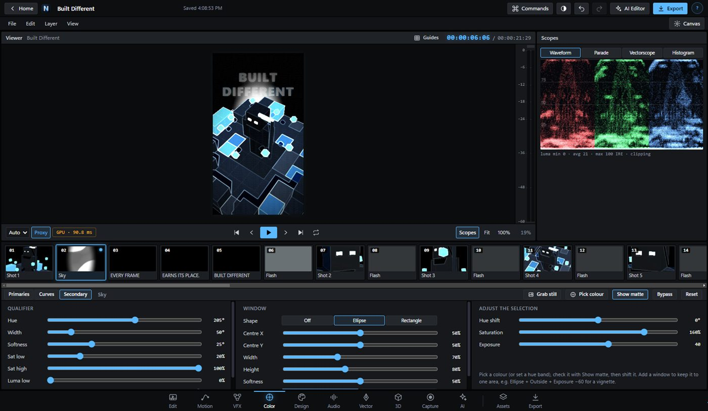
Pick a colour in the viewer, keep it to an area, and change only that.
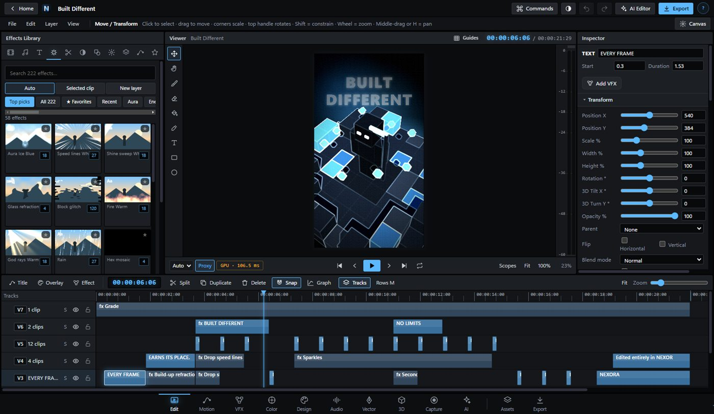
Aura, speed lines, shockwave, glass, light leaks and film looks, each with variations. 26 colour looks and .cube LUTs.
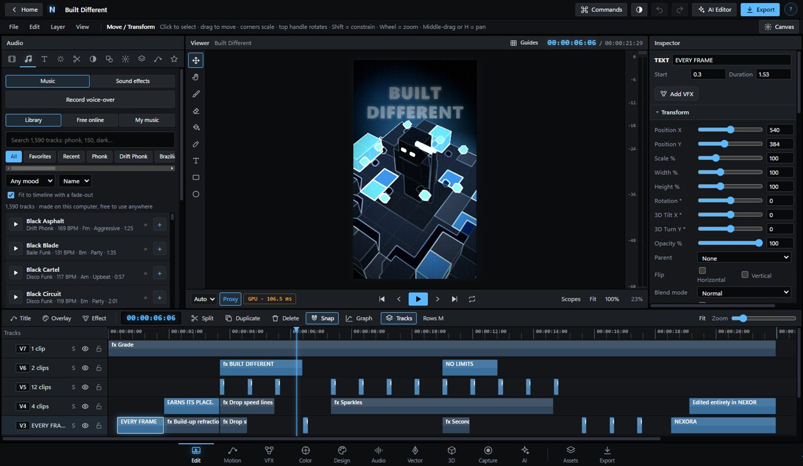
Phonk, Montagem, funk, cinematic and more, made on your computer and free to use anywhere. Beat-synced cuts.
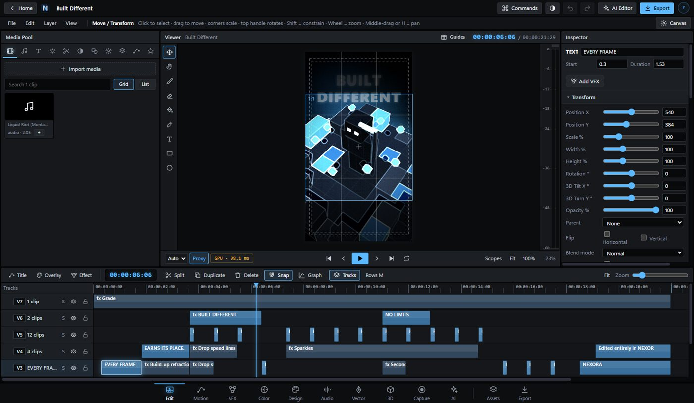
Action and title safe, thirds, centre cross, and frames that show what a 9:16, 1:1 or 4:5 cut-down keeps.
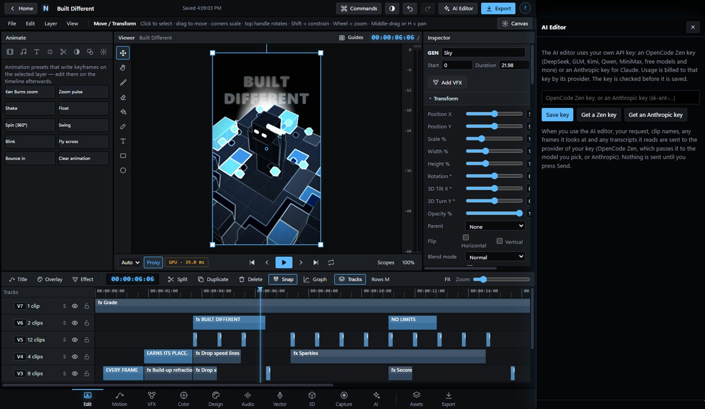
Describe the edit and the AI cuts, trims, grades and titles on the real timeline. One button undoes the whole request.
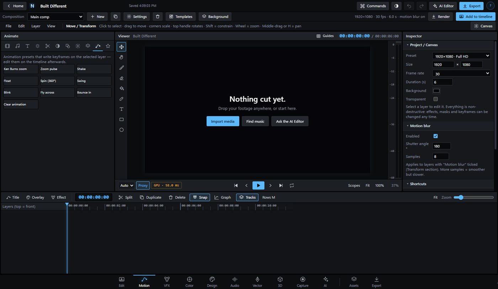
Keyframes with a graph editor, easing, animation presets and compositions you can place in the edit.
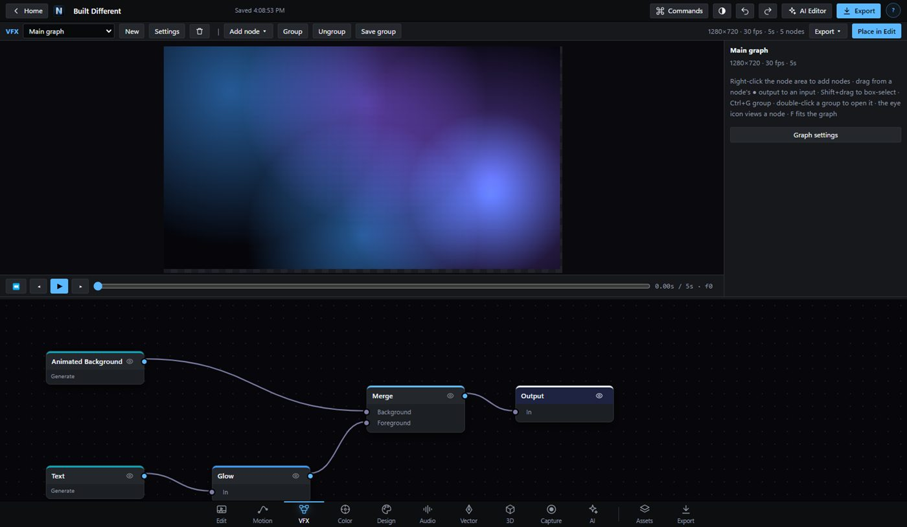
A node graph for compositing: generators, merges, glows, keys and groups, rendered into the timeline.
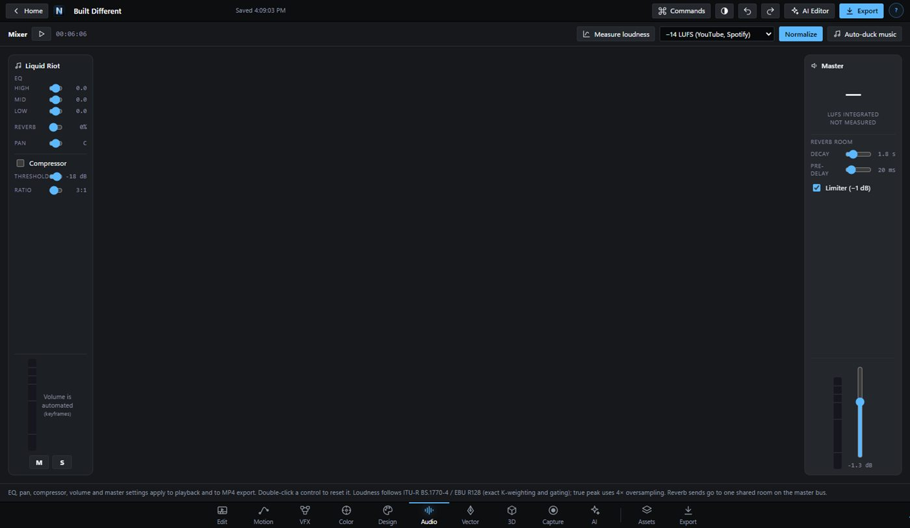
EQ, compressor, pan and reverb per clip; master limiter; loudness measured to ITU BS.1770 and normalised.
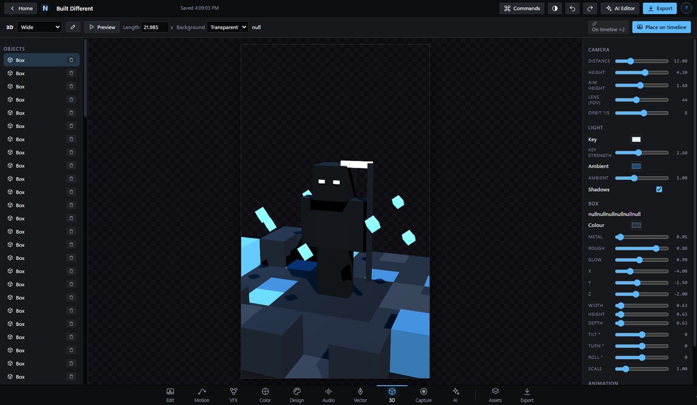
Build lit 3D scenes with animated cameras and objects, and drop them on the timeline like any clip.
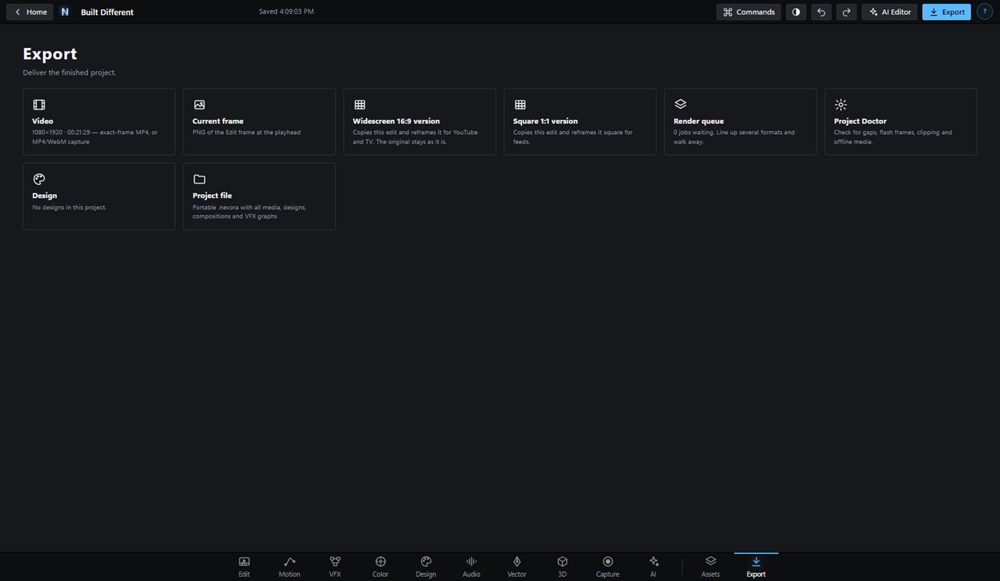
H.264, HEVC, AV1, ProRes 4444, DNxHR, image sequences, a render queue, and one-click 9:16, 1:1 or 4:5 versions.
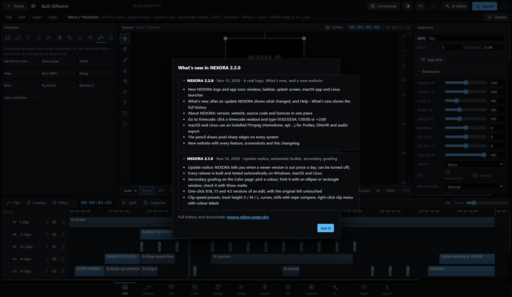
NEXORA tells you when a new version is out and shows what changed. Every release is tested on Windows, macOS and Linux.
A pixel editor and a box-model editor with a live 3D preview, built into NEXORA. Export a Minecraft resource pack, or atlases and OBJ models for any engine.
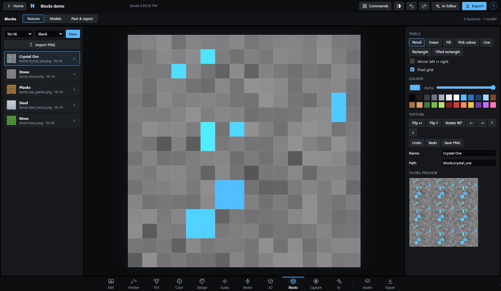
Paint 16×16 up to 1024×1024 textures with tools made for game art, and see the seams before you ship.
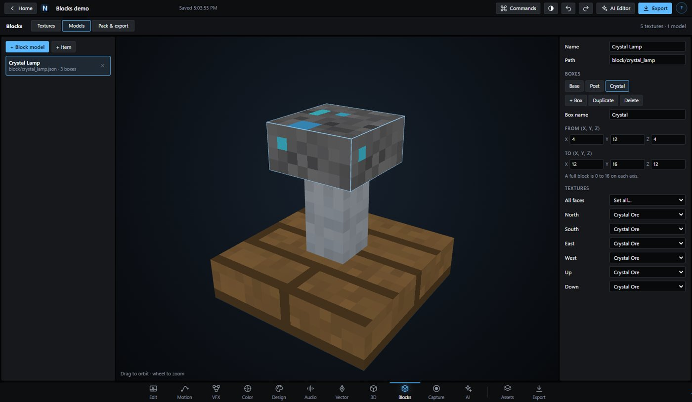
Stack boxes on a 16-unit grid, give every face a texture, and orbit the result live in 3D.
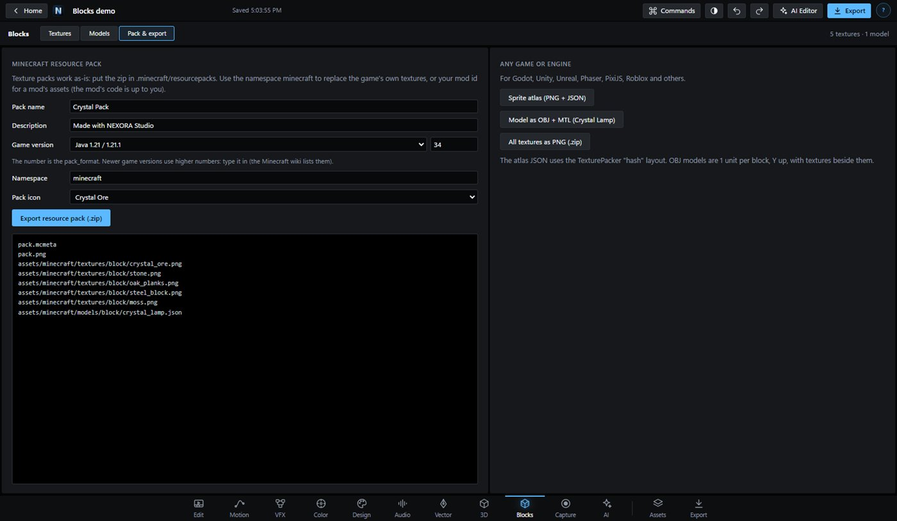
One click turns your textures and models into files a game loads.
No plugins to buy. All of this is in the free download.
The latest release from GitHub. Every file is built and tested automatically from the open-source code.
Windows 10 and 11, 64-bit. The installer adds NEXORA to the Start menu and desktop; uninstall from Settings › Apps. Includes FFmpeg.
Download installer (.exe)or portable .zip (no install)M1 and newer. Unsigned: README-MAC.txt explains the one-time step. Uses an installed FFmpeg (brew install ffmpeg).
Unsigned: README-MAC.txt explains the one-time step. Uses an installed FFmpeg.
Download .zipUnzip and run ./nexora-studio. Uses an installed FFmpeg (sudo apt install ffmpeg).
Every version, newest first. The app shows the same list after it updates.
MIT licensed. Read the code, fix a bug, add an effect. FFmpeg and the AI models are downloaded and checksum-verified by a script instead of being stored in git.
View on GitHubgit clone https://github.com/sysamiryasar/nexora-studio
cd nexora-studio
pwsh scripts/fetch-vendor.ps1
npx electron@33.2.0 .
# run every test inside the real app
npx electron@33.2.0 . --nx-selftest